Когда в первые месяцы Великой Отечественной войны выявилось, что один из лучших истребителей Красной армии ЛаГГ-3 существенно уступает по основным показателям новым немецким истребителям Мессершмитт Вf 109F и Вf 109G, началось сокращение его производства. Кроме того, с началом войны технологические достоинства самолета ЛаГГ-3 обернулись его серьезными недостатками. Смолы для пропитки дельта-древесины были импортными и, доставлять их в воюющую страну было трудно. Возврат к обычной древесине утяжелил бы его конструкцию, да и мощности мотора жидкостного охлаждения ВК-105П уже не хватало. Производство самолетов ЛаГГ-3 могло полностью прекратиться. Поэтому С.А. Лавочкин был вынужден искать радикальное решение для спасения своего самолета, чтобы за короткое время улучшить его летные качества. Главным средством улучшения боеспособности полета в воздушном бою могло стать увеличение его энерговооруженности. Первоначально ставка делалась на мощный климовский двигатель М-107П, который проходил стендовые испытания, но он еще не был окончательно доведен. Конструктор авиационных двигателей А.Д. Швецов посоветовал С.А. Лавочкину заменить на ЛаГГ-3 рядный двигатель водяного охлаждения М-105П двухрядным звездообразным мотором воздушного охлаждения АШ-82 (М-82), имевшим значительно большую мощность 1700 л.с., и к тому же выпускавшимся серийно. Этот двигатель появился еще накануне войны, но на истребители АШ-82 не ставили - сказывалось устоявшееся мнение о звездообразном моторе как о силовой установке с большими поперечными размерами. Лавочкин дал указание делать проект нового самолета на основе ЛаГГ-3 под новый двигатель М-82 воздушного охлаждения с большим весом и миделем при минимальной переделке конструкции самолета. Только при выполнении этого требования можно было перевести серийное производство с выпуска ЛаГГ-3 на его улучшенную модификацию без снижения темпа работ. Однако основная проблема заключалась в том, что мидель М-82 был гораздо больше миделя, сравнительно узкого фюзеляжа ЛаГГ-3, и сопряжение их требовало принятия мер, вплоть до проектирования нового фюзеляжа. Но заместитель Лавочкина С.М. Алексеев нашел более простой выход - надставив вторую (несиловую) обшивку по бортам фюзеляжа в соответствии диаметром с М-82. С этой задачей конструкторы и завод № 21 справились успешно. Опытный экземпляр истребителя ЛаГГ-3 с М-82, получивший название «Ла-5», энергично строился. В апреле 1942 года два экземпляра Ла-5 с успехом прошли испытания. Уже к лету Ла-5 прошел все положенные испытания, показав отличные летные данные: скорость самолета достигала 580 - 600 км/ч на высоте 5900 - 6400 м, а у земли – 550 - 560 км/ч (с форсированием).
Конструкция Ла-5 (аналогичная ЛаГГ-3) представляла собой одноместный моноплан деревянной конструкции с закрытой кабиной и убирающимся шасси, но с небольшими изменениями, так - он получил хвостовое колесо, убираемое в фюзеляж. С 1943 года на самолете был установлен новый фонарь с передним и задним бронестеклами, обеспечивавший обзор задней полусферы (гаргрот фюзеляжа был понижен). Конструкция Ла-5 обладала большой живучестью в бою и почти не содержала дефицитных авиаматериалов, кроме дельта-древесины, дефицитной из-за входивших в ее состав импортных смол. Однако в ходе массового выпуска Ла-5 доля дельта-древесины в конструкции постепенно снижалась путем замены ее обыкновенной сосной. От этого полки лонжеронов крыла становились толще, но большой разницы в массе не было из-за вдвое меньшей объемной массы сосны. В 1944 году лонжероны крыла стали металлическими, и этот вопрос был снят. Фюзеляж, представлял собой полумонокок, выклеенный из березового шпона толщиной 1,15 - 0,75 мм в пять - восемь слоев, что давало толщину стенки 9,5 - 4,5 мм, с уменьшением толщины от носа к хвосту. Для выхода охлаждающего воздуха из-под капота двигателя были сделаны (взамен «юбок») по бортам «щеки» в виде створок, регулируемых, конструктивно более простых и не хуже выполнявших свое назначение. Если на первых сериях Ла-5 оставалась двойная обшивка фюзеляжа за капотом, то впоследствии фюзеляж был переделан в полном соответствии с габаритами двигателя М-82. Стабилизатор - двухлонжеронный деревянный с 3-мм фанерной обшивкой. Управление выпуском шасси гидравлическое. Сиденье летчика получило 10-мм бронеспинку. Вооружение Ла-5 состояло из двух синхронных 20-мм пушек ШВАК, смонтированных над двигателем.
В соответствии с постановлением Государственного Комитета Обороны нарушенное производство самолетов Лавочкина было восстановлено, и в августе того же года с конвейера сошли первые серийные истребители Ла-5. Некоторое время ЛаГГ-3 и Ла-5 выпускались на заводе № 21 параллельно, но постепенно все производство было переведено на Ла-5. Уже осенью 1942 года ряд истребительных авиаполков, был перевооружен на истребители Ла-5. Советские летчики по достоинству оценили не только его технические характеристики и мощное вооружение. Большие скорости горизонтального полета, скороподъемность и приемистость в сочетании с лучшей, чем у ЛаГГ-3, маневренностью на вертикалях обеспечили Ла-5 успех в воздушных боях.
Двигатель воздушного охлаждения, более надежный, чем мотор жидкостного охлаждения, имел и большую живучесть в бою – пулевые и осколочные пробоины не выводили из строя систему охлаждения и одновременно он являлся своеобразной защитой летчика от огня противника с передней полусферы. Используя это свойство самолета, летчики, летавшие на Ла-5, смело шли в лобовую атаку, навязывая противнику выгодную для себя тактику боя. Впервые истребитель Ла-5 принял участие в боевых действиях во время Сталинградской битвы, где отлично проявил себя. Опыт его боевого применения показал, что Ла-5 по своим летно-техническим данным обладает преимуществами перед немецкими самолетами Мессершмитт Вf 109F и Фокке-Вульф FW 190А.
Уникальный воздушный бой с участием Ла-5 произошел 6 июня 1943 году, когда старший лейтенант А.К. Горовец из 88-го истребительного авиаполка атаковал большую группу немецких пикирующих бомбардировщиков. А.К. Горовец на своем Ла-5 сбил
9 бомбардировщиков Юнкерс Ju 87 и заставил остальных отступить, сбросив бомбы мимо цели. Но когда его атаковали четыре истребителя FW 190, у него уже закончились боеприпасы, и наш ас геройски погиб. На самолете Ла-5 в том же году открыл свой боевой счет прославленный советский летчик - ас, трижды Герой Советского Союза И.Н. Кожедуб, доведя число своих побед до 45 (остальные 17 побед - на другом истребителе Лавочкина Ла-7).
В процессе серийного производства самолет непрерывно модернизировался, уже в марте 1943 года на вооружении ВВС Красной армии начал поступать улучшенный вариант Ла-5Ф с форсированным двигателем М-82Ф. Мощность его по сравнению с М-82 не изменилась, но благодаря проведенным доработкам его 10-минутный форсажный режим стал для М-82Ф номинальным. По сравнению с германским Мессершмиттом Вf 109F истребитель Ла-5Ф получил преимущество в скорости и маневренности. А вскоре, с появлением усовершенствованного двигателя М-82ФН с непосредственным впрыском топлива в цилиндры (мощностью 1850 л.с.), ОКБ Лавочкина разрабатывает новый вариант Ла-5.
По рекомендации ЦАГИ у этой модификации Ла-5 была улучшена аэродинамика капота; заменены деревянные лонжероны крыла на металлические; облегчено шасси; улучшена теплоизоляция кабины (до этого в кабине было жарко из-за воздуха, идущего от двигателя); кроме того, он в дополнение к двум 20-мм пушкам ШВАК или Б-20 получил еще и бомбодержатели для внешней подвески четырех реактивных снарядов РС-82 или четырех 50-килограммовых бомб. Это был один из самых легкоуправляемых истребителей, отлично державшийся в глубоком вираже и обладавший не только высокой скоростью и скороподъемностью, но и исключительно хорошими маневренными данными. В результате всех улучшений фронтовой истребитель Ла-5ФН значительно превзошел немецкие истребители Вf 109F и FW 190А по скорости на малых и средних высотах и по характеристикам вертикального и горизонтального маневров.
На заводских испытаниях в марте 1943 года опытный Ла-5ФН продемонстрировал очень высокие летные данные: показав скорость на высоте - 650 км/ч, а у земли - 598 км/ч. Подтверждением высоких качеств этого истребителя стали войсковые испытания, проведенные весной на Брянском фронте, когда советские летчики на 14 самолетах Ла-5ФН провели 25 воздушных боев, сбив при этом 33 самолета противника, потеряв при этом - лишь четыре своих. Первые серийные Ла-5ФН поступили на фронт летом 1943 года и сразу же приняли участие в сражении на Курской дуге. По своей боеспособности Ла-5ФН в 1943 году стал сильнейшим истребителем на советско-германском фронте. Летом того же года появился двухместный учебно-тренировочный истребитель Ла-5УТИ, разработанный на базе Ла-5Ф, вооруженный одной пушкой ШВАК; без бронестекла и радиооборудования. В конце 1943 года в небо поднялся усовершенствованный истребитель Ла-5ФН, получивший обозначение «Ла-7». Улучшилась аэродинамика самолета с переносом и улучшением аэродинамических форм радиатора; почти на 100 кг уменьшился общий вес конструкции, что позволило усилить вооружение самолета, установив третью 20-мм пушку ШВАК или Б-20. Запущенный в серийное производство, Ла-7 в последний год войны стал одним из основных фронтовых истребителей и одним из лучших самолетов Второй мировой войны.
На самолетах Лавочкина Ла-5, Ла-5ФН и Ла-7 успешно сражались дважды Герои Советского Союза К.А. Евстигнеев (56 побед), В.И. Попков (42 победы), А.В. Алелюхин (57 побед), Н.М. Скоморохов (46 побед), В.Д. Лавриненко (46 побед), Амед-Хан Султан (49 побед) и другие.
Серийное производство самолетов-истребителей Ла-5 осуществлялось заводами Наркомата авиапромышленности СССР № 21 им С. Орджоникидзе (г. Горький); № 31 им. Г. Димитрова (г. Тбилиси); № 99 (г. Улан-Удэ); № 381 (г. Нижний Тагил). Всего в 1942 – 1944 годах было изготовлено в 4 модификациях 10 003 самолетов Ла-5. Общее же количество построенных за время Великой Отечественной войны истребителей Ла-5 и Ла-7 всех модификаций - превысило 21 000 экземпляров.
В Центральном музее Великой Отечественной войны экспонируется макет самолета-истребителя Ла-5 (бортовой номер 15), из состава 4-го гвардейского истребительного авиационного полка ВВС дважды Краснознаменного Балтийского флота, принадлежавшего Герою Советского Союза Г.Д. Костылеву В годы Великой Отечественной войны он совершил 418 боевых вылетов и в 112 воздушных боях сбил лично 12 самолетов противника, и 34 - в группе. Макет самолета построен АООТ «Тушинский машиностроительный завод» совместно с ТОО «Авион» в 1995 году.
В конце 1930-х годов все серийные истребители в Советском Союзе имели в своей основе смешанную конструкцию. Несмотря на все недостатки при использовании древесины (в основном — больший вес конструкций необходимой жёсткости) создание «дельта-древесины» и продвижение проекта самолёта ЛаГГ-1/ЛаГГ-3, построенного с использованием этих материалов, привело к появлению на свет современного по тому времени истребителя цельнодеревянной конструкции. Изделия из дерева требовали очень высокой квалификации рабочих. Весь фюзеляж ЛаГГ-3 (из которого потом делали ЛаГГ-5) собирался на клею, что требовало строжайшего соблюдения требований по температуре, влажности и запылённости в цеху. Опытный экземпляр самолёта был отполирован с особой тщательностью и покрыт лаком для снижения аэродинамического сопротивления. Все эти факторы привели к тому, что в серийном производстве ЛаГГ-3 был немного другим самолётом, нежели на испытаниях, и требовал, уже при рождении, модернизации.
Несмотря на то, что ЛаГГ-3 обладал целым рядом конструктивных недоработок и был трудным в пилотировании, лётчики с уважением относились к этому самолёту, признавая, что его пилотирование не является простым делом и требует определённой подготовки. За лакированную древесину ЛаГГ получил прозвище «Лакированный Гарантированный Гроб», которое, вопреки распространённому мнению, не употреблялось во время войны, и появилось после выхода книги, посвящённой творчеству С. А. Лавочкина. В боях ЛаГГ показал себя живучей машиной, способной вернуться на аэродром базирования с фюзеляжем, напоминающим «решето». Но в начале 1942 года ЛаГГ-3 уже не мог на равных бороться с новыми модификациями немецких истребителей. Лётчики жаловались на слабое вооружение машины, оснащённой поначалу лишь тремя пулемётами, а также на недостаточный запас патронов. Лавочкин, пойдя навстречу требованиям фронтовиков, увеличил калибр оружия и боезапас, тем самым утяжелив конструкцию. Резко упала скорость и скороподъёмность. Основная проблема была в моторе. У ЛаГГ-3 был мотор жидкостного охлаждения М-105П мощностью 1050 л. с. Но его мощности не хватало для тяжёлой машины цельнодеревянной конструкции. Лавочкин возлагал надежды на новый рядный двигатель жидкостного охлаждения М-107. При тех же габаритах, что и серийный М-105, новый двигатель В. Климова (далёкий потомок французского мотора «Испано-Сюиза» 12 Ybrs, купленного по лицензии) развивал взлётную мощность в 1400 л. с., а на высоте 5 км — 1300 л. с. В этой связи конструкторским бюро Лавочкина и Яковлева было поручено разработать истребители на базе этого двигателя. Двигатели серии М-105, устанавливавшиеся на ЛаГГ-3, также были в дефиците, поскольку использовались на Як-1/Як-7 и Пе-2. К январю 1942 разработка истребителя ЛаГГ была на грани закрытия. Ставка отдавала предпочтение уже налаженному производству Як-7, так что Лавочкину пришлось срочно искать новый двигатель. Его КБ приняло решение заменить двигатель водяного охлаждения на двигатель воздушного охлаждения — АШ-82.
По мнению наркома авиационной промышленности А. Шахурина, этой заменой решалась проблема большой государственной важности. Получилось так, что на всех истребителях, проходивших испытания в 1940 году, стояли двигатели водяного охлаждения. А не менее 40 процентов двигателей, производимых на моторных заводах, имели воздушное охлаждение. Перевести же завод с производства моторов воздушного охлаждения на водяные во время войны практически было невозможно, так как для этого требовалось сменить почти всё специальное оборудование. Поэтому при острейшей нехватке двигателей водяного охлаждения имелись значительные складские запасы (это 1942 год!) авиационных двигателей воздушного охлаждения. Именно эти запасы и позволяли быстро дать фронту крайне необходимый истребитель.
Из-за несоответствия размеров и большего веса двигатель невозможно было установить на существующий каркас без значительных переделок и, соответственно, затрат времени, а это было критическим моментом. Однако, заместитель Лавочкина С. М. Алексеев сумел в невероятном темпе, без расчётов и чертежей, сделать опытный экземпляр самолёта. В связи с решением Государственного Комитета Обороны о снятии ЛаГГ-3 с производства и передачи заводов, на которых он выпускался, в распоряжение КБ Яковлева и организации на них производства истребителей Як, ситуация для КБ Лавочкина складывалась критической. Однако, 21 марта 1942 года, за несколько дней до отправки КБ Лавочкина в Тбилиси лётчик-испытатель Василий Яковлевич Мищенко поднял в воздух будущий Ла-5.
Новый мотор обеспечивал столь тяжёлой конструкции необходимую мощность в 1700 л. с. По сравнению с базовым ЛаГГ-3 новый самолёт был существенно лучше, в частности резко увеличилась скорость и скороподъёмность, однако и проблем было предостаточно.
Главной из них была температура. Из-за спешки конструктору не удалось должным образом доработать самолет и обеспечить нормальный отвод температуры от двигателя. Проблему решили путем установки нового маслорадиатора, забытого на заводе №21 инженерами КБ Яковлева. Однако решить проблему жара в кабине пилота до конца так и не удалось.
22—23 апреля лётчики-испытатели А. П. Якимов и А. Г. Кубышкин продолжили испытания. Для полётов использовали залитую талой водой полосу в десятке километров от завода. Во время испытаний многие части опытного самолёта ломались, недоработки устранялись прямо на лётном поле при свете автомобильных фар, но судьба была очень благосклонна к пилотам и никто при таких «испытаниях» не погиб. Всего было проведено 26 испытательных полётов. Отчёт об испытаниях был направлен в Москву. В отчёте было указано, что самолёт основную массу испытаний выдержал, но не решена проблема с перегревом мотора. Москва подумала и дала на устранение неисправностей 10 (!) дней, однако некий рабочий Авиастроительного завода № 21 обнаружил в цеху упакованный в деревянный ящик новенький масляный радиатор с заводским паспортом от мотора М-107. Он и спас самолёт. Лавочкин запретил брать чужое, но коллектив его не послушал. За одну ночь выколотили дюралевый обтекатель к новому радиатору и поставили на самолёт. Двигатель перегреваться перестал.
6 мая 1942 года провели испытания на штопор. Без продувок в аэродинамической трубе и тщательных расчётов выйти из штопора крайне затруднительно. Но в этот раз испытания прошли успешно. 20 мая было принято решение о начале серийного производства ЛаГГ-3 с мотором М-82 под обозначением ЛаГГ-5 на заводе № 21 в Горьком.
Первые серийные машины не достигали скорости, заявленной в справке, на основании которой И. В. Сталин принимал решение о запуске самолёта в серию. Для решения проблемы на завод срочно выехала группа специалистов, которую возглавлял начальник ЦИАМ Владимир Исаакович Поликовский. Научная группа работала круглосуточно. Именно В. И. Поликовский предположил, что причина потери скорости — плохая герметизация капота. Были проведены работы по герметизации капота, в результате которых самолёт достиг заявленной скорости.
Результаты работы Георгия Ивановича Петрова в области совершенствования аэродинамики самолётов позволили увеличить скорость истребителей Як-3 и ЛаГГ-5.
Справедливости ради стоит признать, что ЛаГГ-3 на полгода раньше успешно оснастил двигателем АШ-82 соавтор Лавочкина по ЛаГГу М. И. Гудков. Его самолёт Гу-82 практически был готов к серийному производству, но из-за необходимости увеличения количества уже выпускаемых серийных самолетов в условиях сложной обстановки на фронте, так и не был принят к производству.
Конструктивно ЛаГГ-5 отличался от ЛаГГ-3. Установка двигателя воздушного охлаждения и нового вооружения повлекли за собой немало изменений. В отличие от ЛаГГ-3 последних серий, ЛаГГ-5 вначале не имел автоматических предкрылков и убирающегося заднего колеса — они появились позднее. Несколько изменились размеры нового самолёта по сравнению с ЛаГГ-3. Так, длина ЛаГГ-3 была 8,81 метра, а длина нового самолёта - 8,67 метра. Изменился и взлётный вес — с 3160 кг до 3380 кг. Несмотря на больший вес, ЛаГГ-5 с более мощным мотором показывал хорошие результаты. Его скорость в горизонтальном полёте на уровне моря была на 8 км/ч больше своего предшественника, а на высоте 6500 метров превосходство в скорости возросло до 34 км/ч. Лучше была и скороподъёмность. Но что важнее всего, новый самолёт удалось сравнить с трофейным Мессершмиттом Ме109 G-2. ЛаГГ-5 если и уступал немецкому истребителю, то очень незначительно, в то время как ЛаГГ-3 был с ним просто не сравним.
Первые серийные самолёты стали сходить с конвейера в июле 1942 года. Первоначально ЛаГГ-5 имел на вооружении две автоматические 20-мм пушки ШВАК, которые размещались в передней части фюзеляжа над двигателем. Приборное оснащение было очень скудное. На самолёте даже не имелось ни одного гироскопического прибора, как например авиагоризонта или гирокомпаса. Если сравнивать ЛаГГ-5 с аналогичными самолётами Германии (тогда это был Третий Рейх), Великобритании или США, то может показаться, что технически он значительно уступал им. Однако по своим лётным качествам он вполне соответствовал требованиям времени. Кроме того, его простая конструкция, отсутствие необходимости в сложном техобслуживании и нетребовательность к взлётным полям делали его идеальным для тех условий, в которых приходилось действовать частям советских ВВС. В течение 1942 года было изготовлено 1129 истребителей ЛаГГ-5.
Приказом НКАП № 683 от 8 сентября 1942 года истребители ЛаГГ-5 были переименованы в Ла-5.
Истребитель Ла-5 имел аэродинамическую схему одномоторного свободнонесущего низкоплана. Основным конструктивным материалом планера была сосна и берёзовый шпон. При изготовлении силового набора крыла и фюзеляжа также применялась дельта-древесина. Все деревянные детали самолета склеивались смоляным клеем ВИАМ-Б3, без применения гвоздей и шурупов. Также в конструкции силовых элементов применялась специальная сталь, а на самолётах выпуска 1944 года и позднее часть элементов планера была выполнена из дюраля и стали.
Фюзеляж
деревянный, полумонококовой конструкции, овального сечения. Технологически состоял из двух разъёмных частей: переднего отсека и остальной части планера. Киль выполнен заодно с фюзеляжем.
Силовая конструкция передней части состояла из пяти рамных шпангоутов и шести бимсов. Внутри носовой части находился т.н. лафет — сварная ферма из хромансилевых труб, профилей и подкосов, которая служила для крепления моторамы двигателя и агрегатов пушечного вооружения самолёта. Обшивка носовой части — листовой дюралюминий.
Остальная часть каркаса фюзеляжа полностью деревянная. Силовой набор хвостовой части — четыре лонжерона, 15 шпангоутов и 143 стрингера, материал — сосна. Все шпангоуты коробчатого сечения, кроме шпангоута №1 который выполнен сплошным и отделяет переднюю часть фюзеляжа от задней. Шпангоуты №№ 1, 2 и 3 — силовые. Они не имеют нижней части и в этом месте каркас планера самолёта усилен продольными сосновыми брусьями. Фанерная обшивка фюзеляжа состоит из двух половин (правой и левой), она крепилась к каркасу при помощи клея на основе эпоксидный смолы и состояла из 4-8 слоев полос березового шпона, наклеенного по отношению к строительной оси фюзеляжа под углом 45°, а по отношению к соседнему слою шпона — под углом 90°.
На самолётах модификации Ла-5ФН с боков передней части фюзеляжа и на центроплане до нервюры №2 установлена защита обшивки от обгорания горячими выхлопными газами мотора, в виде накладных дюралевых листов на асбестовой прокладке.
Кабина лётчика расположена сразу за передней частью фюзеляжа, между шпангоутами №2 и №5. Кабина закрывалась сдвижной крышкой фонаря, шп. №№ 2-7, которая могла быть аварийно сброшена одним движением ручки. В кабине расположено кресло летчика с чашкой под парашют, органы управления самолётом и его системами, приборная доска и электрощиток, сверху доски установлен прицел. За спинкой кресла устанавливалась броня толщиной 8,5 мм, впереди и сзади остекления установлено по бронестеклу.
Крыло
трапециевидное в плане, с поперечным V 5°±15′. Состояло из центроплана и двух отъёмных частей.
Силовой набор центроплана почти полностью деревянный, состоял из двух лонжеронов, двенадцати нервюр и стрингеров. К силовому набору клеилась несущая обшивка из бакелитовой фанеры переменной толщины от 5 до 3 мм, передняя кромка выклеивалась из березового шпона толщиной 3 мм. Внутри центроплана вклеены кессоны для установки бензобаков. Центроплан крепился к лафету и фюзеляжу на болтовых соединениях с помощью четырех стальных кронштейнов (два передних и два задних), соединение было в эксплуатации неразъемным, так как закрыто зализом центроплана, выклеенного из берёзового шпона. На переднем лонжероне центроплана крепились узлы крепления створок и стоек шасси. На заднем лонжероне устанавливались узлы крепления основных топливных баков и шарниры закрылков.
Конструкция каркаса отъёмной части крыла почти аналогична каркасу центроплана и включает два лонжерона, 15 нервюр, носовой, средний и хвостовой стрингеры, заднюю кромку и концевой обвод. Консоли крепятся к центроплану на двух стальных узлах стыковки, в каждом по четыре болта из термообработанной хромансилевой стали.
На самолётах производства 1944 года (тип 41) применяются лонжероны центроплана и крыла, изготовленные из термообработанной стали марки С30ХГСА.
Механизация крыла
Элероны типа Фриз с весовой балансировкой и аэродинамической компенсацией. Силовой набор состоит из трубчатого лонжерона и девяти дюралевых нервюр, обшивка полотняная. Элероны крепились к заднему лонжерону крыла тремя шарнирами. Элероны отклонялись от нейтрального положения на 18°±1° вверх и вниз. На левом элероне установлен неуправляемый триммер. Управление элеронами осуществлялось с помощью трубчатых тяг от ручки управления в кабине лётчика.
Щитки-закрылки типа Шренк двухсекционные, цельнометаллические. Расположены между элеронами и фюзеляжем. Подвеска петлевая. Управление — от гидросистемы. Максимальный угол отклонения составляет 60° с допуском минус 10°.
Предкрылки щелевые автоматические, выпускались под действием аэродинамических сил на больших углах атаки, затягивая появление срывных явлений на крыле. Крепились на передней кромке крыла между 6 и 14 нервюрами.
Хвостовое оперение
Киль (технологически входил в состав фюзеляжа), стабилизатор, рули направления и высоты. Стабилизатор - двухлонжеронный цельнодеревянный с работающей обшивкой из двух миллиметровой дельта-древесины: угол установки стабилизатора составляет 0°±10′, поперечное V — 0°±15′ . Рули высоты металлические крепились к стабилизатору на двух шарнирах, триммер только на левой половине. Отклонение руля высоты вверх составляет 27°30′-1°; отклонение вниз — 16°30′-1°. Отклонение триммера — ±17°-1°.
Руль направления конструктивно аналогичен рулям высоты, к килю крепился при помощи трех шарниров. Полный угол отклонения руля направления ±25°-1°
Шасси
Двухстоечное с убирающимся хвостовым колесом. Основные ноги убираются гидравлическими подъёмниками в центроплан по размаху к оси фюзеляжа. В случае неисправности гидросистемы предусмотрен принудительный выпуск шасси от воздушной системы самолёта.
Амортизаторы масляно-пневматические, с полным ходом штока амортизатора 180 мм. В каждый амортизатор основной ноги шасси заливалась спирто-глицериновая смесь (70% глицерина и 30% спирта) и затем стойка заряжалась сжатым воздухом до давления 40 атм (на Ла-5ФН установлена более мягкая и длинноходная стойка с ходом штока амортизатора 220 мм и давлением зарядки 32 атм). Часть строевых самолётов дорабатывалась по эксплуатационному бюллетеню №51 установкой облегчённых стоек с ходом штока 200 мм.
На основных стойках шасси было по одному полубаллонному тормозному колесу размером 650х200 мм. Тормоза воздушно-камерные, барабанного типа, с 10 колодками на колесо. Рукоятка торможения установлена на ручке управления самолётом. Раздельное торможение колёсами осуществляется через дифференциал управления торможением, связанный с педалями ножного управления.
Хвостовое колесо убирающееся в полёте, с масляно-пневматическим амортизатором, самоориентирующееся. Пневматик размером 300х125 мм.
Гидравлическая система
Предназначена для уборки-выпуска шасси и привода закрылков. Механическая гидропомпа МШ-3А установлена на моторе. В качестве рабочей жидкости применялась спиртоглицериновая смесь, по бюллетеню она была заменена на более агрессивную жидкость ГС (смесь окисленного касторового масла с бутиловым спиртом), но из-за разъедания манжет и сальников вскоре вернулись к спиртоглицериновой смеси.
Воздушная система
Сжатый воздух на самолёте используется для запуска мотора, для работы агрегатов вооружения, торможения колёс и аварийного выпуска шасси. Запас воздуха хранится в бортовом баллоне ёмкостью 8 литров, заряжаемый давлением 140-150 атм.
Топливная система
На разных сериях самолётов несколько разная топливная система. Так, на самолётах до 9 серии устанавливалось пять баков (три в центроплане и два консольные) общей ёмкостью 540 литров. Затем были упразднены консольные баки по 97 литров, а ёмкость трёх центропланных баков была увеличена и фактическая заправка самолётов разных серий составляла 460-465 литров.
Так, на самолёте Ла-5ФН в центроплане установлено три бензобака общей ёмкостью 464 литра. Средний бак расходный. Баки изготовлены из дюралевого сплава АМЦП. В качестве топлива применялся авиационный этилированный бензин 4Б-78. По мере выработки топлива баки заполняются нейтральным газом — охлаждёнными и очищенными выхлопными газами.
| 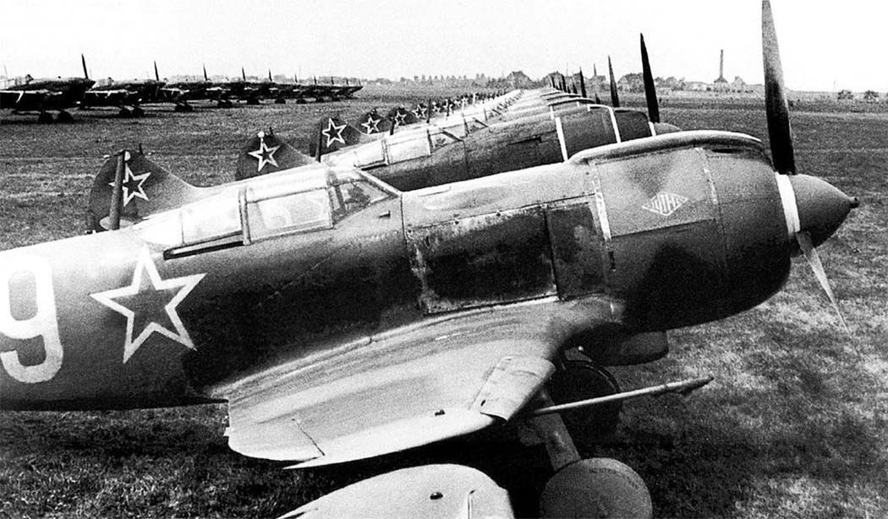 |
| 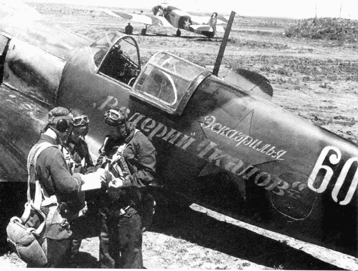 |
| 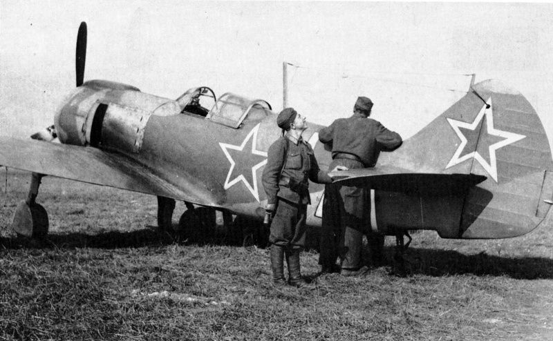 |
| 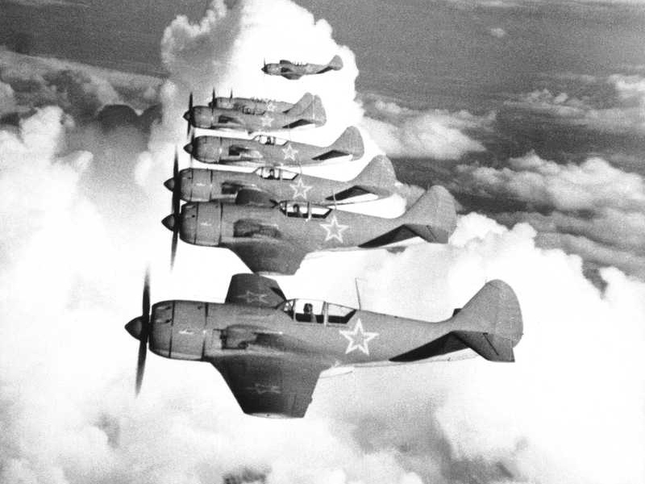 |
| 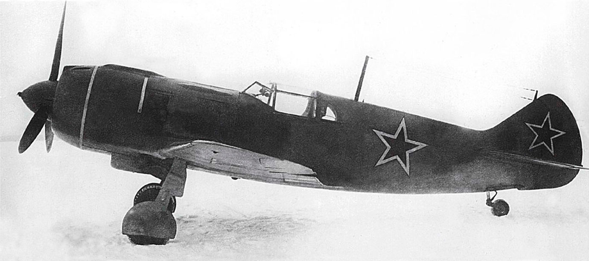 |
| 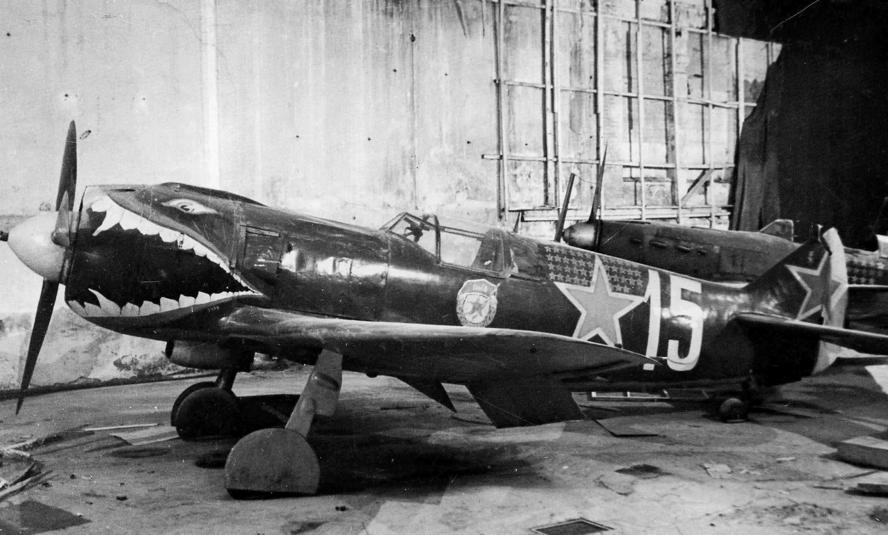 |
 |
| 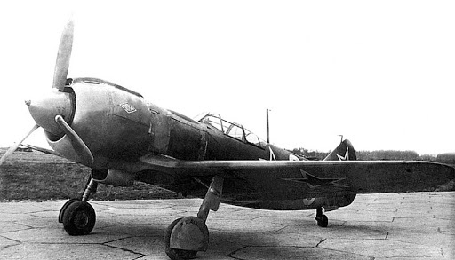 |
| 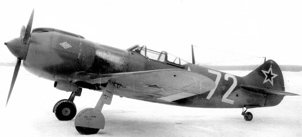 |
| 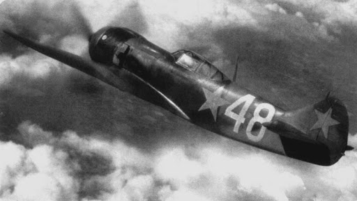 |
| 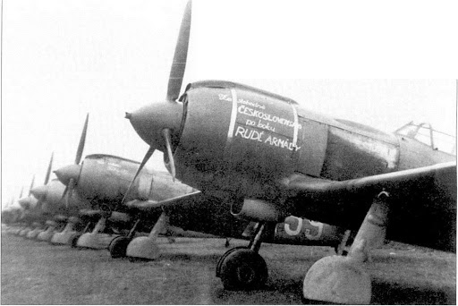 |
| 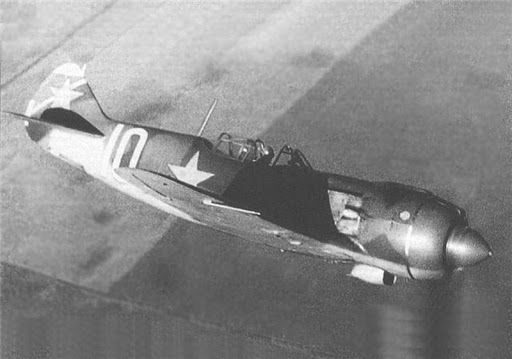 |
| 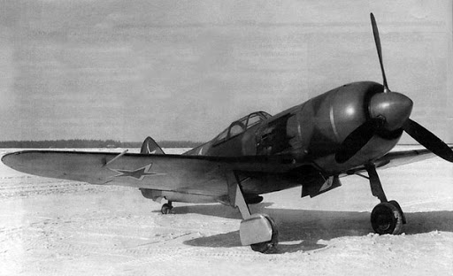 |
| 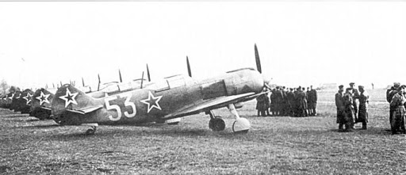 |
| 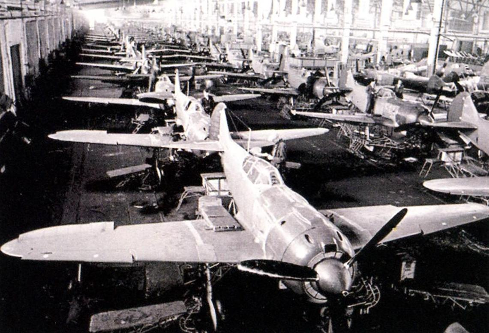 |
| 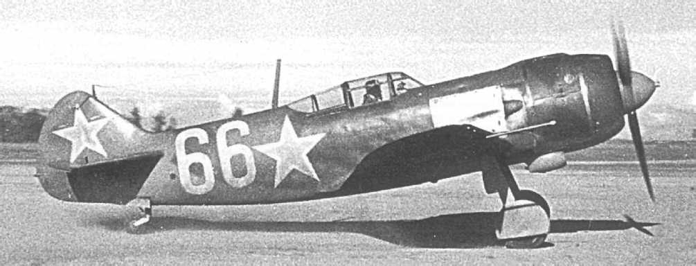 |
| 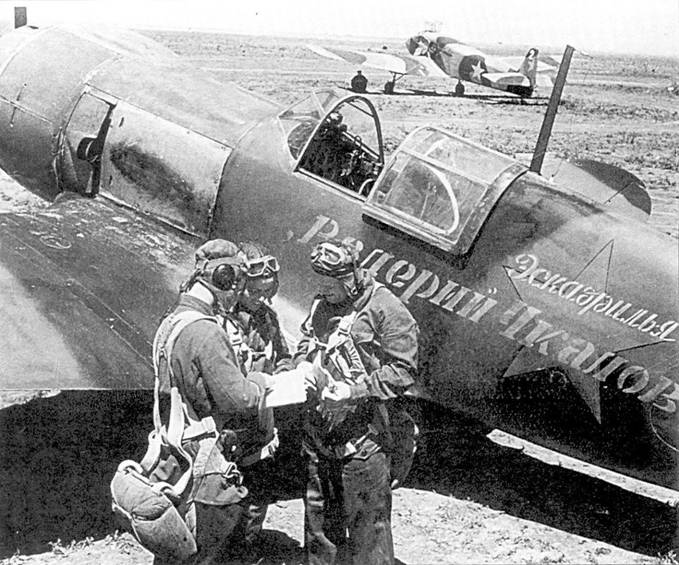 |
| 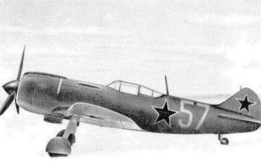 |
| 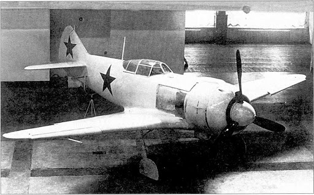 |
| 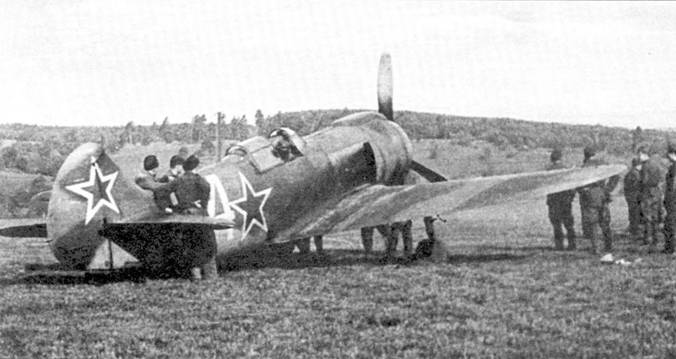 |